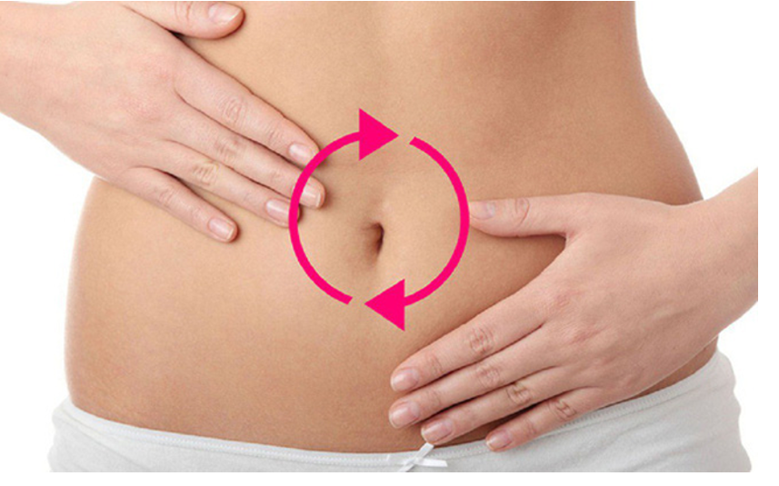

VÌ SAO SAU PHẪU THUẬT DỄ BỊ ĐẦY HƠI?
• Do tác dụng của thuốc gây mê, làm giảm nhu động ruột
• Ít vận động sau phẫu thuật
Dấu hiệu cần theo dõi- Bụng chướng, căng tức, khó chịu
- Chậm trung tiện (chưa xì hơi)
- Buồn nôn, ăn kém
- Không đi tiêu sau nhiều ngày
Báo ngay nhân viên y tế khi:- Bụng chướng nhiều, đau tăng
- Nôn nhiều
- Không trung tiện hoặc đại tiện sau 3–4 ngày
NHỮNG BIỆN PHÁP GIÚP GIẢM ĐẦY HƠI
NHAI KẸO CAO SU• Nhai kẹo giúp kích thích ruột hoạt động lại sớm hơn
• Giúp xì hơi và đi cầu sớm hơn
• Là biện pháp đơn giản – an toàn – chi phí thấp
Cách thực hiện:
• Nhai 10–15 phút/lần
• Ngày 2–3 lần
👉 Giúp kích thích phản xạ tiêu hóa, tăng hoạt động ruột, hỗ trợ giảm đầy hơi
VẬN ĐỘNG SỚM – NHẸ NHÀNG• Ngồi dậy, đứng lên và đi lại khi được nhân viên y tế cho phép
• Đi bộ chậm quanh phòng hoặc hành lang
• Tăng dần mỗi ngày theo khả năng
👉 Vận động giúp kích thích nhu động ruột và đẩy hơi ra ngoài.
XOA BỤNG ĐÚNG CÁCHCách xoa bụng:
• Người bệnh nằm ngửa, thả lỏng
• Dùng lòng bàn tay xoa nhẹ nhàng theo vòng tròn quanh rốn
• Theo chiều kim đồng hồ
• Thời gian: 5–10 phút/lần, 1–2 lần/ngày
👉 Xoa bụng giúp kích thích nhu động ruột, giảm đầy hơi.

ĂN UỐNG HỢP LÝNÊN:
• Ăn ít một, chia nhiều bữa
• Thức ăn mềm, dễ tiêu (cháo, súp)
• Uống đủ nước, chia nhỏ trong ngày
TRÁNH (trong vài ngày đầu):
• Nước ngọt có ga
• Đồ chiên nhiều dầu mỡ
• Ăn quá no một lần
KHI NÀO CẦN BÁO NHÂN VIÊN Y TẾ?
Báo ngay nếu có:
• Bụng căng nhiều, đau tăng
• Buồn nôn hoặc nôn nhiều
• Sau 2–3 ngày vẫn chưa xì hơi hoặc đi cầu
• Sốt hoặc đau bụng bất thường